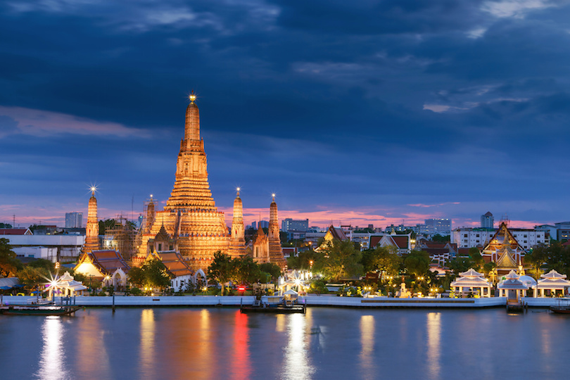
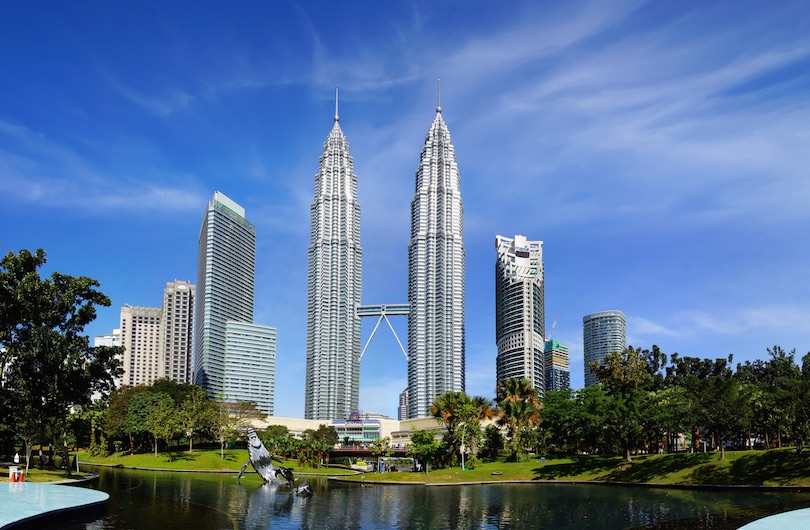
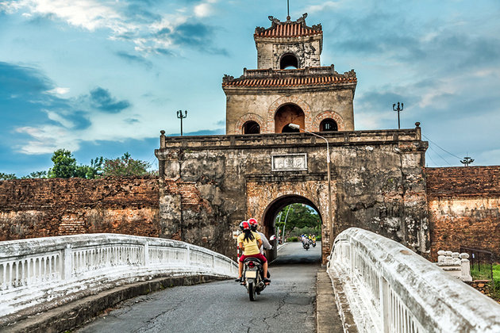
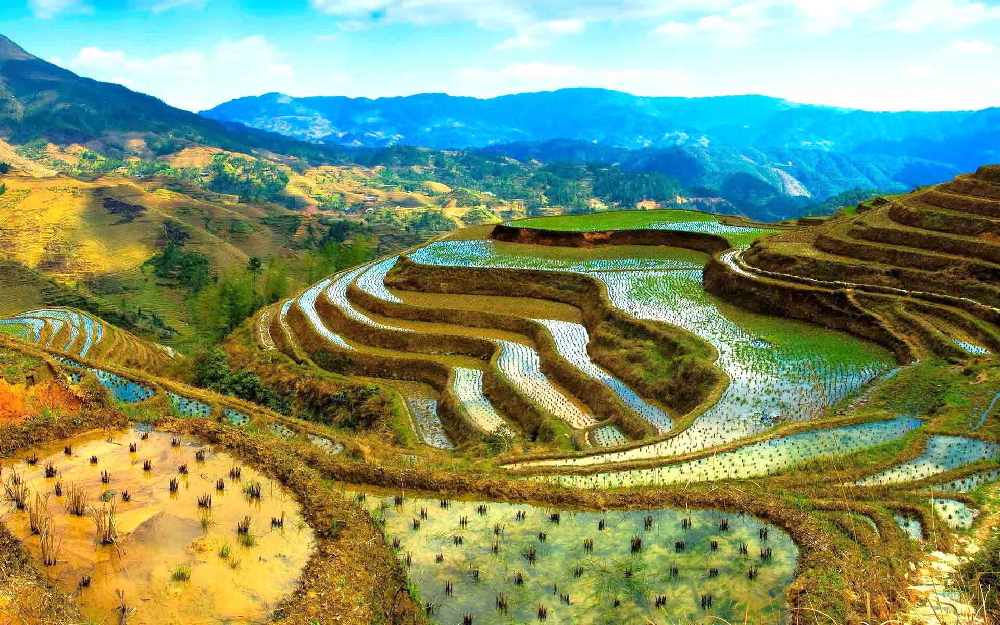

Here you will find photographs and information on various travel destinations and sights organized by country.
| Country | Cities of Interest | Sights of Interest |
|---|---|---|
| Thailand | Bangkok, Chiang Mai, Pattaya | Floating Markets of Bangkok, Ancient City of Ayutthaya, Wat Arun, Railay Beach |
| Malaysia | Kuala Lumpur, George Town, Malacca City | Petronas Twin Towers, Pinang Peranakan Mansion, Langkawi Sky Cab, Chulia Street |
| Vietnam | Ho Chi Min City, Hanoi, Da Nang, Hue | Imperial City of Hue, Marble Mountains, Old Quarter of Hanoi, Hoi An Ancient Town |
| Philippines | Manila, Cebu, Davao, | Boracay, Siargao, Fort Santiago, Taal Lake |
ThailandFriendly, sacred, fun, and loving. Thailand is the home of numerous exotic, tropical, cultured, and historic destinations. The country radiates a golden hue from its glittering temples and tropical beaches. Night view of Wat Arun in Bangkok
MalaysiaMalaysia, a nation divided in half by the South China Sea, has the best of both worlds. While the peninsula is host to numerous bustling cities filled with colonial architecture and history. Malaysian Borneo is home to tropical jungles of remote tribes, mountain peaks, and exotic wildlife. The Petronas Twin Tower in Kuala Lumpur
VietnamThe unforgettable and astonishing natural beauty combined with a unique cultural heritage is the trademark of Vietnam. Forty years have passed since the devastating conflict that defined the nation we know today. Vietnam has quickly become a fast-developing nation with booming metropolises. Given its rich history, visitors to Vietnam can enjoy an eclectic scenery including French colonial architecture and breathtaking modern high-rises. Imperial Palace gate of Hue
PhilippinesThe Philippines is filled with emerald rice fields, bustling mega-cities, and island paradises. Through its cheerful people and sunny weather, this country will teach you to look on the bright side of life. Rice terraces in Banaue